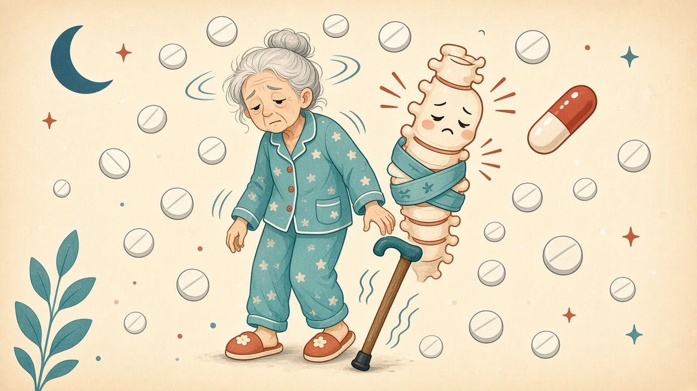
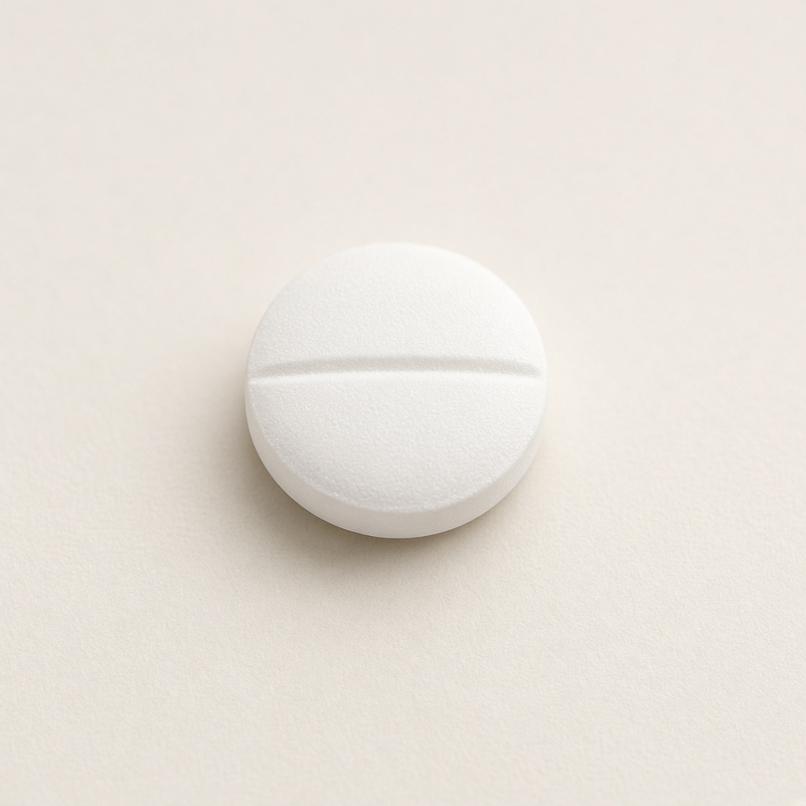
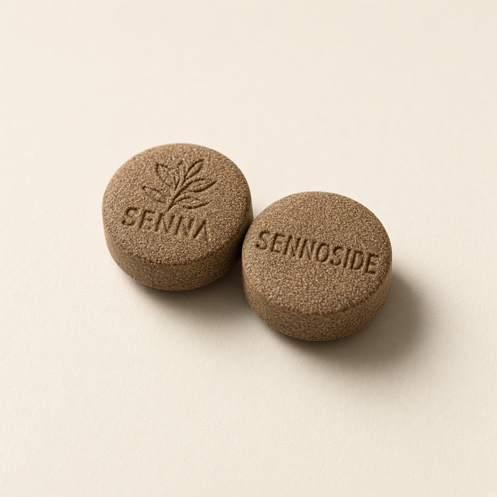
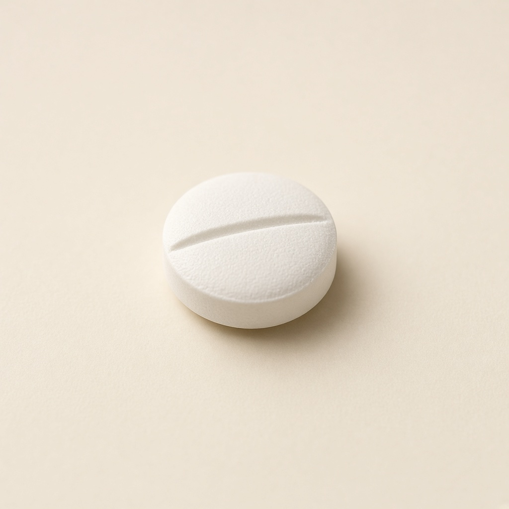
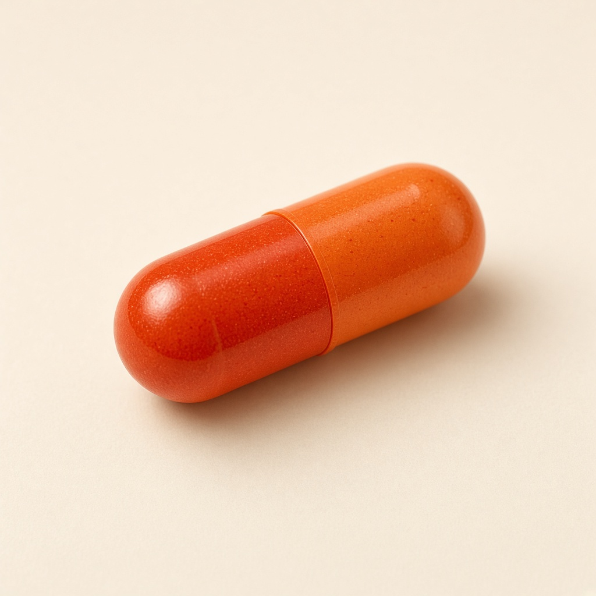

整合結論

藥疊太多時，身體會一直扭。下面這節脊椎已經打過骨水泥、又有鋼釘，最怕被這樣晃。
一句話
最新完整排法裡，始立沒有再寫進去；真正還太重的是安滿達 400 mg，以及晚上 22:00 一次吃利福全、安規、Lyrica。心寧美仍是每 4 小時半粒，先留。22 點那一組會讓人軟、昏、跌，對剛打好鋼釘的腰很危險。
LEDD＝左旋多巴當量。依 9/12 晚間完整手寫表：心寧美 300 mg ＋安滿達 400 mg＋愛可穩 100 mg。這張表沒有始立、沒有賣力膜。若家裡還在貼賣力膜或再吃始立，數字會再往上。
現在最重要
回診前不要自行一次停好幾顆。突然停安滿達、停左旋多巴，可能全身僵硬、高燒、肌肉溶解，比異動更急。正確做法是：醫師同意後，一次只改一樣、隔一到兩週再改下一樣。
目前全部排法
9/12 晚間最新手寫表。含帕金森藥、循環藥、軟便藥、安眠藥與神經痛藥。

22:00 一次六樣：帕金森藥、軟便、兩種安眠藥，再加 Lyrica。對 42 kg、腰有鋼釘的人，跌倒風險最高的是這一餐。
這張表有、先前表沒排清楚的
安眠：利福全 0.5 × 三次（6、14、22）＋睡前安規 0.5。等於白天也吃長效安眠藥，晚上還雙重。
軟便：便通樂 2 粒睡前。帕金森常便秘，這支相對合理。
循環：大塚普達錠早晚各 1 粒（cilostazol）。會擴血管、抗血小板，容易心悸、頭痛、瘀青。
這張完整表沒寫的
始立、賣力膜、舒肌痛、佑克、脈優。若家裡還有在貼賣力膜或再吃始立，請另外記下來給醫師，因為那會再加重異動。
之前的疾病史
寶建醫院骨科紀錄（2026 年 5 月）。公開頁不放有姓名的 X 光原圖，用示意圖說明現在這節腰在怕什麼。

對應 5/29 術後 X 光：上面兩節是補骨水（椎體成形），下面有螺釘與鋼棒。異動等於一直搖這組內固定。
5/20 左右
家裡已在穿腰部護帶，代表開刀前背部就已經不穩。
5/28 急診住院
診斷：第一及第二腰椎壓迫性骨折、右肩滑囊炎。骨科李炫昇醫師。
5/29 手術
椎體成形（補骨水）＋自費可擴張椎體系統；同時做右肩關節穿刺。同意書有註明麻醉風險（心、腦、肺栓塞、肺部感染）。
5/30 出院
醫囑：術後需背架使用、休養三個月（大約到 8 月底）。
8/21
大同神經內科開 28 天帕金森藥（心寧美、安滿達、愛可穩、利福全）。家裡手寫時間表還疊了始立與賣力膜。
8/29 再住院
寶建感染科，主訴發燒。三個月養護期剛好結束前後。住院單繼續自備帕金森藥，並加抗生素、點滴、吸入、止痛與安眠藥。
現在（9 月）
估計體重約 42 kg。最新完整排法已沒有始立；安滿達仍 400 mg，晚上還疊安眠與 Lyrica。鋼釘與骨水泥都還在，最怕異動和跌倒。
跟用藥的關係
壓迫性骨折常見於高齡、瘦、跌倒或異動。現在安滿達仍 400 mg，晚上又疊兩種安眠藥，跌倒比異動更可能再傷這節腰。右肩滑囊炎也會因跌倒、僵硬或異動再痛。
認藥圖示（依藥袋外觀）
對照藥袋上的外觀說明繪製，方便家人對藥。不是藥單原圖（原圖有姓名）。

心寧美 Sinemet
黃色橢圓錠，一面「650」。每次半粒、約每 4 小時一次。先留這支。

始立 Stalevo
瓶裝 100/25/200。較早的表有跟心寧美疊吃。最新完整表沒有寫，不要再加回去。

安滿達 Amanda
淺橘圓錠，印「WD」。目前一天 4 粒＝400 mg，對 42 kg 高齡過重。

愛可穩 Equfina
白圓膜衣錠，印「E 284」。早上 2 粒＝100 mg。確認沒有吃成早晚各 2 粒。

利福全／瑞多寧
橘色圓錠、中間有刻痕。完整表寫 0.5，一天三次（6、14、22）。多半是半粒。

賣力膜 Neupro
膚色方形貼片。住院曾用 8 mg，家屬加過半片。最新完整表沒有寫，若還在貼要告訴醫師。

普達 Pletaal
循環藥 cilostazol。完整表早晚各 1 粒（6:00、18:00）。抗血小板，易心悸、頭痛、瘀青。

便通樂 Through
番瀉苷軟便藥。睡前 2 粒。帕金森常便秘，這支相對合理。

安規 Lorazepam
短效安眠藥。完整表 22:00 吃 0.5，同一時間還有利福全。等於雙重安眠。

利瑞卡 Lyrica
神經痛藥 pregabalin。完整表睡前 1 粒。會腫、昏、跌，和安眠藥疊在一起更軟。
為什麼會神經痛
5 月底才做完 L1、L2 補骨水與內固定，8 月底才滿三個月休養。病人說的神經痛，要先分清楚是扭、是僵，還是這節腰本身。

痛 A · 異動期
藥太多時：扭、晃、坐不住。鋼釘和骨水泥被反覆剪切，會像電、刺、抽。再加肌鬆或神經痛藥常常治標不治本。

痛 B · 關機期
藥不夠或亂停時：僵、抽筋、整條背扳住。這種痛要靠穩定的心寧美，不能先砍心寧美。

痛 C · 脊椎結構
L1、L2 壓迫性骨折、骨水泥、螺釘，加上右肩滑囊炎，本來就會痛。異動沒減，鄰近節比較容易再骨折。
最新完整表 22:00 同時有利福全、安規、Lyrica。對 42 kg 高齡會更軟、更昏、更容易跌，跌一次對剛打好的腰很傷。
各藥副作用（跟這位病人特別有關的）
建議先保留
心寧美 Sinemet（左旋多巴 300 mg／日）
走路、翻身、吞嚥的底。目前是每 4 小時半粒，單次劑量其實不大。
副作用：峰值異動、噁心、低血壓、幻覺（高劑量時）。
和神經痛：吃完就大扭，痛會在異動時出現；若亂減，關機僵硬一樣會讓脊椎痛。所以減量草案先不動這支。
較早的表有、最新完整表沒寫
始立 Stalevo
較早手寫曾跟心寧美同一時間吃。最新全部排法沒有這支。不要再加回去。若家裡還有剩，問醫師後再處理。
高齡 42 kg 幾乎是上限中毒區
安滿達 Amantadine 400 mg／日
標示不得超過 400 mg；超過 200 mg 毒性就上升。75 歲、腎清除差、體重 42 kg，常用往往只有 100–200 mg。
副作用：幻覺、混亂、腳腫、網狀青斑、口乾、解尿困難、肌躍（身體突然跳一下）、跌倒。
和神經痛：肌躍很像神經電擊；腳腫、走路不穩也容易再跌、再傷脊椎。這支必須很慢減，不能隔天停光。
會放大異動
愛可穩 Safinamide 100 mg／日
已是核准最大量。最新完整表是 10:00 一次 2 粒＝100 mg。住院單曾誤寫早晚各 2 粒，不要吃成一天兩次。
副作用：異動、失眠或嗜睡、頭暈、頭痛、姿勢性低血壓、跌倒。
和神經痛：本身不傷神經，但會讓左旋多巴的異動更明顯，間接拉扯脊椎。
最新完整表沒寫
賣力膜 Neupro
住院曾 8 mg，家屬加過半片。最新全部排法沒有貼片。若其實還在貼，等於多巴胺整天都在，異動會再重。
跌倒風險 · 完整表一天三次
利福全 Clonazepam 0.5 × 3
6:00、14:00、22:00 各 0.5。長效，白天也會蓄積。22:00 還加安規，等於雙重安眠。
副作用：肌肉變軟、嗜睡、混亂、流口水、跌倒、突然停藥會抽搐。
和神經痛：不治療神經痛。它讓人軟、跌，對鋼釘腰是危險因子。
22:00 疊上去
安規 Lorazepam 0.5 ＋ 利瑞卡 Lyrica 1
和利福全、安滿達、心寧美、便通樂同一時間。短效安眠＋神經痛藥都會昏、跌、腫。
建議跟醫師討論：晚上只留一種安眠（通常利福全或安規擇一），Lyrica 是否真的還需要。
循環藥
普達 Pletaal 早晚各 1
cilostazol 50 mg，擴血管、抗血小板。副作用：頭痛、心悸、腹瀉、水腫、容易瘀青出血。和安滿達都會腫；若再跌倒或要動脊椎，出血風險要讓醫師知道。
軟便 · 相對合理
便通樂 Through 睡前 2 粒
番瀉苷。帕金森常見便秘，這支可以留。副作用是腹痛、腹瀉。不要為了「少吃藥」而先停這支，反而用力會傷腰。
住院有、最新完整表沒寫
舒肌痛／佑克／脈優
最新全部排法沒有這三支。若其實還在吃，一併帶給醫師看。
原本劑量 vs 建議減量
「原本」依 9/12 晚間完整排法。「建議」是給醫師看的草案，不是現在立刻改的藥單。
心寧美
目前：半粒 × 6 次（6、10、14、18、22、半夜），左旋多巴 300 mg
建議：維持不變
安滿達
目前：6、14、18、22 各 1 粒，共 400 mg
建議：先拿掉 14:00 那顆→300，再拿掉 18:00→200
愛可穩
目前：10:00 吃 2 粒＝100 mg
建議：改 1 粒＝50 mg
利福全
目前：6、14、22 各 0.5
建議：白天先停，只留 22:00；若已有安規，再跟醫師擇一
安規 ＋ Lyrica
目前：22:00 安規 0.5 ＋ Lyrica 1，和利福全同一時間
建議：晚上只留一種安眠；Lyrica 重評是否還需要
普達
目前：6:00、18:00 各 1 粒
建議：循環藥先留，但告訴醫師有抗血小板；易瘀青、心悸
便通樂
目前：22:00 吃 2 粒
建議：可留，不要先停
始立／賣力膜
目前完整表：沒寫
建議：不要加回去。若其實還在用，一定告訴醫師
分三階段減量（一次只改一樣）
回診前 · 先別動
維持目前這張完整表，避免關機。能做的是：量體重、拍異動影片、確認沒有另外再吃始立或貼賣力膜。
第一階段 · 先拆晚上那一疊（約 1 週）
風險最低、對脊椎最有幫助：22:00 不要同時吃兩種安眠。跟醫師選「利福全或安規留一個」。白天 6:00、14:00 的利福全可先拿掉。便通樂留著。心寧美、普達先不動。
白天利福全拿掉
Lyrica 是否留下問醫師
第二階段 · 降安滿達與愛可穩（約 2–4 週）
安滿達先停 14:00 那顆（400→300），一到兩週後再停 18:00 那顆（→200，只留早晚）。愛可穩改 10:00 吃 1 粒（50 mg）。
若這階段關機太明顯（僵、吞嚥差、發高燒），立刻停在這一階、聯絡醫師，不要繼續減。
第三階段 · 再收夜間（約再 2–4 週）
- 安眠收到睡前最小有效量，不要兩種一起。
- Lyrica 若神經痛其實是異動在扯腰，減多巴胺藥比加神經痛藥有用。
- 普達、便通樂原則上保留，由醫師決定。
- 心寧美六次半粒原則上仍保留。
9/23 回診可帶這些
- 實際體重（坐秤也可），不要再用估計。
- 吃飯、走路、躺床各拍 20–30 秒異動影片。
- 分清楚：痛是「扭的時候」還是「僵的時候」。
- 這張完整表：始立、賣力膜有沒有其實還在用。
- 22:00 是否真的利福全＋安規＋Lyrica 一起吃。
- 有無腳腫、幻覺、網狀紅斑、尿色深、肌肉痛、容易瘀青。
- 請抽肌酸酐／eGFR（安滿達靠腎排）；若肌肉很痛可加 CK。
- 告訴醫師：2026/5/29 寶建骨科做 L1、L2 椎體成形＋內固定，右肩滑囊炎穿刺；8 月底才滿三個月休養，怕異動再傷神經與鋼釘。